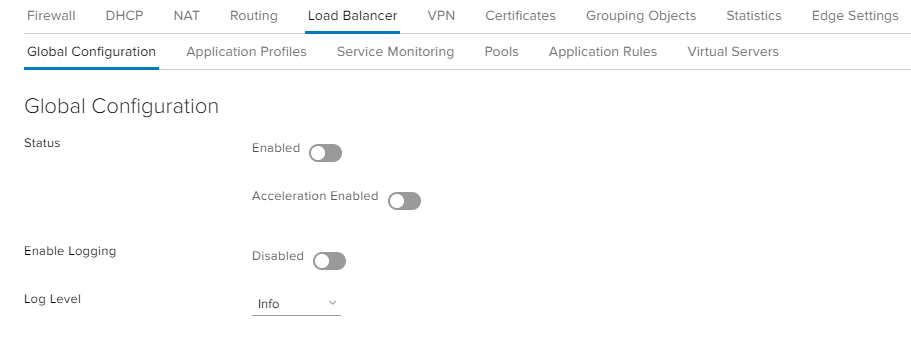
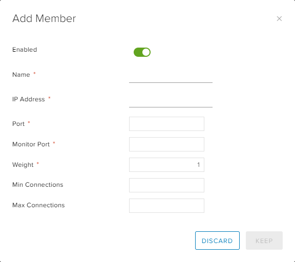
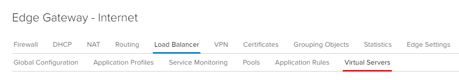
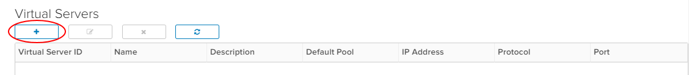
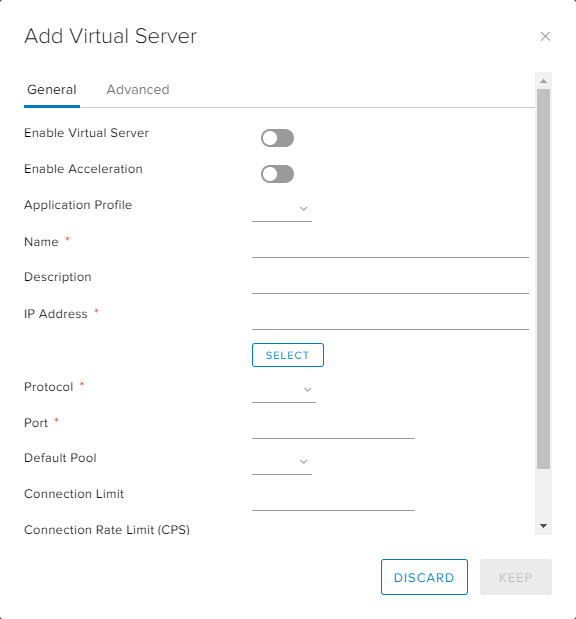

How to configure a load balancer
Overview
One of the functions of the edge gateway is to act as a basic load balancer, distributing IP traffic to a pool of servers while appearing as a single virtual server. The load balancing methods offered are round-robin, IP hash, URI, HTTP header or least connected.
Bear in mind, however, that the edge gateway load balancer is quite basic. If you need to meet more complex requirements, you'll need provide your own third-party virtual load balancer.
Configuring a load balancer
To configure a load balancer:
In the VMware Cloud Director Virtual Data Center dashboard, select the VDC that contains the edge gateway in which you want to configure the load balancer.
In the left navigation panel, under Networking, select Edges.

On the Edge Gateways page, select the edge that you want to configure and click Services.

On the Edge Gateway page, select the Load Balancer tab.

Select the Global Configuration tab, then select the Status option.
Select the Acceleration Enabled option if you want to use the Layer 4 engine rather than Layer 7.
If you have a syslog server configured, select the Enable Logging option and select the Log Level.
For more information about syslog servers, see How to access syslog data for your advanced gateway

Click Save changes.
Configuring a server pool
Server pools are the real servers that are masked by the load balancer.
Note
Before you configure the pool of servers, make a list of their IP addresses so that you can populate the pool later in the procedure.
On the Load Balancer tab of the Edge Gateway page, select the Pools tab.

Click the + button.

In the Add Pool dialog box, enter a Name and Description.
Note
The pool name should not include any spaces.
From the Algorithm list, select the load balancing algorithm to use.
Tip
For a description of the different algorithms, see the Add a Server Pool for Load Balancing VMware article.
From the Monitors list, select the monitors policy to use.
Select the Transparent option if you want IP addresses to be transparent.

In the Members section, click +.

In the Add Member dialog box, enter the server Name, IP Address, Port and Weight. When you're done, click Keep.

Add more pool members as required and when you're done, click Keep.
To view the status of pool members, click Show Pool Statistics.

Configuring a virtual server
A virtual server masks the pool of real servers and presents a single IP address.
On the Load Balancer tab of the Edge Gateway page, select the Virtual Servers tab.

Click the + button.

In the Add Virtual Server dialog box, enable the Enable Virtual Server option.
Enter a Name for the virtual server, assign it a virtual IP Address, and assign it to the server pool you want to mask (Default Pool). You can also choose which services you want to apply to the virtual server. When you're done, click Keep.

Next steps
In this article you've learned how to configure a load balancer. For other edge gateway configuration tasks, see:
Feedback
If you find a problem with this article, click Improve this Doc to make the change yourself or raise an issue in GitHub. If you have an idea for how we could improve any of our services, send an email to feedback@ukcloud.com.